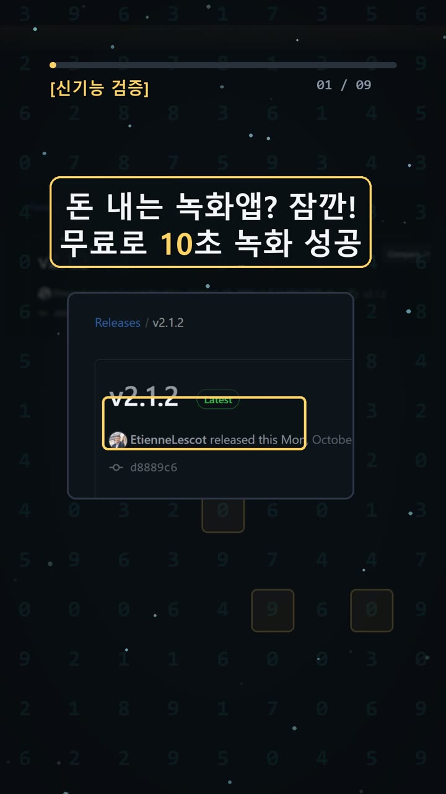
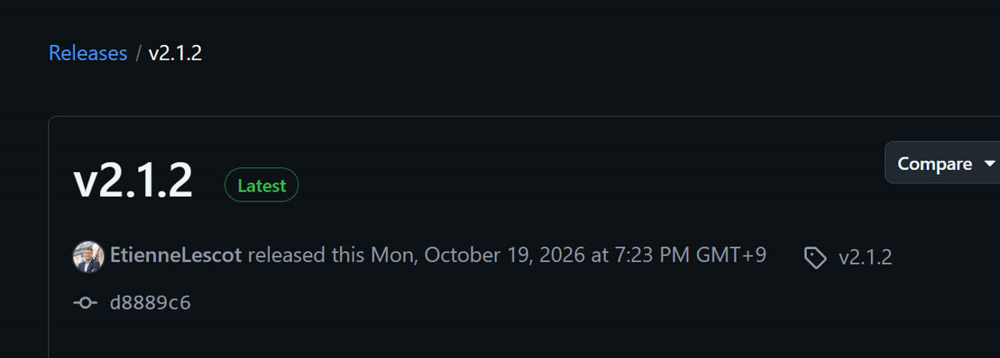
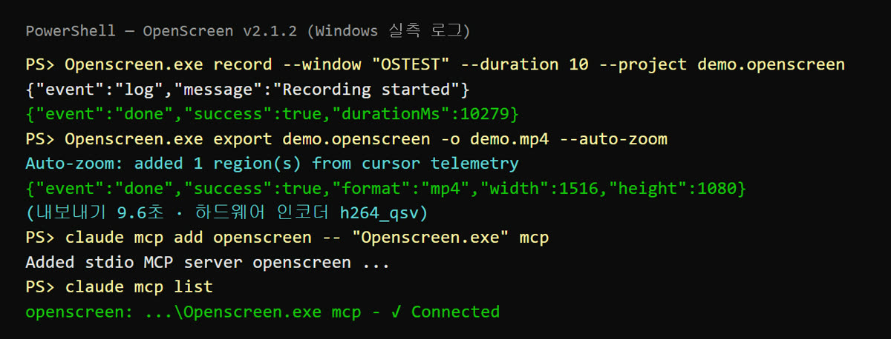
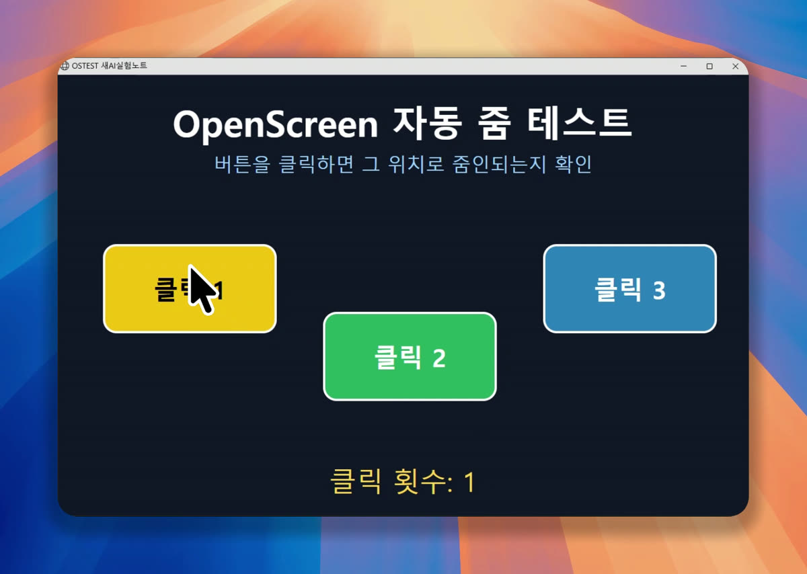

이 포스팅은 쿠팡 파트너스 및 토스쇼핑 쉐어링크 활동의 일환으로, 이에 따른 일정액의 수수료를 제공받습니다.
OpenScreen 2 직접 써 보니: 윈도우에서 무료로 클릭 자동 줌 화면 녹화
한눈에 보기
- OpenScreen 2는 화면을 녹화해서 제품 소개 영상이나 사용법 영상으로 다듬어 주는 무료 오픈소스 앱이에요. 개인용이든 상업용이든 무료이고, 라이선스는 MIT예요. 계정을 만들 필요가 없고 워터마크도 붙지 않아요.
- 윈도우 PC에서 10초를 녹화하고
--auto-zoom옵션으로 내보냈더니, 클릭한 위치로 자동으로 확대되는 MP4가 9.6초 만에 나왔어요. 워터마크가 없는 것도 영상 프레임을 보고 직접 확인했어요. - Claude Code에 연결하는 데도 성공했어요(목록에 'Connected'로 표시). 다만 데모 스킬 설치는 실패했고, 자막 기능은 시험하지 않았어요. 그래서 이번 확인 수준은 partial(부분 확인)이에요.
시작 전에 확인할 것
- 요금: OpenScreen은 무료예요. 다만 앱 안의 AI 채팅 편집, Smart cuts, 앱 안 자막 번역은 본인 API 키(AI 회사에서 받는 사용 열쇠)가 있어야 하고, 요금은 각 회사 기준으로 나가요. Claude Code로 편집하려면 Claude Code 이용 플랜도 따로 필요해요.
- 운영체제(OS): Windows 10 1903(빌드 18362) 이상 또는 Windows 11이 필요해요. 윈도우 자체 녹화 기능을 쓰려면 빌드 19041 이상이어야 하고, 그보다 낮으면 브라우저 방식 녹화로 바뀌어요. macOS는 13 이상, Linux는 PipeWire와 xdg-desktop-portal이 필요해요.
- 컴퓨터 사양: 최소 Intel 8세대나 AMD Ryzen 2000 이상, RAM 8GB가 필요해요(16GB 권장). 권장 환경은 Windows 11에 Intel 12세대나 Ryzen 4000 이상이에요.
- 자막: 처음에 Whisper 모델(말소리를 글자로 바꾸는 AI, CLI 기준 약 264MB)을 한 번 내려받아야 해요. 녹화한 영상에 소리가 있어야 자막을 만들 수 있어요.
- 비교 대상: 유료 앱 [Screen Studio](https://screen.studio/)는 월 결제 시 월 29달러, 연 결제 시 월 9달러예요. macOS 전용이고 윈도우 지원 계획은 없어요. 그래서 윈도우 사용자라면 둘 중에 고르는 상황이 아니라, 처음부터 OpenScreen 같은 도구를 찾아봐야 해요.
- 누가 만들었나: 원작자 Siddharth Vaddem이 v1.5.0 이후 원래 저장소를 보관(archive) 처리했어요. 이후 그의 승인을 받아 [getopenscreen/openscreen](https://github.com/getopenscreen/openscreen)에서 커뮤니티가 개발을 이어 가고 있어요. 릴리스는 EtienneLescot이 올려요. 2026-10-20 기준 별 4,616개, 포크 303개예요(원래 저장소는 별 39,930개, 보관 상태).
설치 방법
최신 정식판은 v2.1.2로, 2026-10-19 한국시간 19:23에 나왔어요([Releases](https://github.com/getopenscreen/openscreen/releases)).

1. 방법 A — Microsoft Store 버전(공식 권장) 📄 공식 문서 기준
- ① 터미널(명령어를 입력하는 검은 창, 윈도우에서는 PowerShell)을 열고 아래 명령을 입력해요.
winget install --source msstore OpenScreen
- ② Microsoft가 서명한 버전이라 경고 없이 설치되고 업데이트도 자동으로 돼요.
- ③ 주의할 점이 있어요. 이 버전은 업데이트할 때마다 설치 폴더가 바뀌어요. 그래서 Claude Code를 연결할 때는 아래 '사용 방법 5번'의 Store 방식을 써야 해요.
2. 방법 B — .exe 설치 파일 ✅ 직접 해 봄(다운로드와 파일 확인까지)
- ① [Releases](https://github.com/getopenscreen/openscreen/releases)에서
Openscreen.Setup.<버전>-x64.exe를 받아요. ARM PC라면-arm64파일이에요. 저희는 2.1.2 x64 파일(약 179MB)을 받는 데 6.4초 걸렸어요. 파일 지문(SHA-512)이 공식 값과 같은 것도 확인했어요. - ② 받은 파일을 실행하면 설치가 시작돼요.
- ③ 이 파일은 서명이 없어서 SmartScreen(윈도우 보안 경고) 창이 뜰 수 있어요. 그럴 때는 '추가 정보 → 실행'을 누르면 돼요.
> 참고: 저희는 무인 작업 규칙 때문에 PC 전체에 설치하지 않았어요. 설치 파일 안의 앱 압축(app-64.7z)만 꺼내서 따로 만든 폴더에서 실행했어요(풀기 9.1초).
사용 방법
1. 녹화하기 📄 공식 문서 기준: 앱에서 녹화할 창이나 전체 화면을 고르고, 보여 줄 곳을 클릭하며 녹화한 뒤 정지해요. 2. 편집하기 📄 공식 문서 기준: 편집 화면에서 자동 줌(Automatic zooms, 키 필요 없음), 커서 스무딩(마우스 움직임을 부드럽게 만드는 기능), 배경을 적용하고 MP4로 내보내요. 3. 명령어로 똑같이 하기 ✅ 직접 해 봄: 저희는 화면(GUI) 대신 CLI(명령어로 앱을 쓰는 방법)로 해 봤어요.
Openscreen.exe --help Openscreen.exe sources -o sources.json Openscreen.exe record --window OSTEST --duration 10 --project demo.openscreen Openscreen.exe export demo.openscreen -o demo_autozoom.mp4 --auto-zoom --quality good --fps 30
- 이게 보이면 성공:
--help를 치면 export·record·sources·pack·captions·info·mcp 명령 목록이 나와요. 내보내기 로그에는Auto-zoom: added 1 region(s) from cursor telemetry가 찍혀요.
4. 자막 📄 공식 문서 기준: 마이크로 녹음한 영상이라면, 처음 한 번 Whisper 모델을 받은 뒤 쓸 수 있어요. CLI 자막은 영상 위에 글자를 입히는 방식이고, 따로 자막 파일이 생기지는 않아요. 5. (선택) Claude Code 연결
- Store 버전 📄: 앱의 AI settings → MCP server를 켜고, 화면에 나온 Claude Code 명령을 터미널에 붙여 넣어요. Claude Code가 직접 편집까지 하게 하려면 'MCP edits'도 켜야 해요(기본은 꺼져 있어요). 이 서버는 내 PC(127.0.0.1) 안에서만 열려요.
- .exe 버전 ✅ 직접 해 봄:
claude mcp add openscreen -- "%LOCALAPPDATA%\Programs\Openscreen\Openscreen.exe" mcp claude mcp list
- 이게 보이면 성공:
claude mcp list에 openscreen이 Connected로 나와요. (저희는 압축을 푼 폴더의 실행 파일 경로로 등록했어요.)
우리가 직접 해 본 결과
확인 수준은 partial이에요. 해 본 것과 못 해 본 것을 나눠서 적을게요.

된 것
sources: 화면 2개와 창 7개를 찾았고, 테스트 창도 목록에 있었어요.- 10초 녹화 성공: 녹화하는 동안 실제로 3번 클릭했어요. 윈도우 자체 녹화와 하드웨어 인코더로 녹화됐고, 커서 기록 345개 가운데 클릭 3개가 저장됐어요. 시작부터 끝까지 13.5초 걸렸어요.
- 자동 줌 내보내기: 9.6초 만에 1516x1080 MP4(10.03초, 301프레임)가 나왔어요. 인코더는 Intel h264_qsv(하드웨어)였어요.
- MCP:
Openscreen.exe mcp에 요청을 보내니 0.5초 만에 응답이 왔고, 도구가 55개 있었어요(startRecording·addAutoZooms·exportVideo·transcribe·getFrames 등). Claude Code 등록은 0.8초, 'Connected' 확인은 1.9초 걸렸어요.


결과 영상을 보면, 약 4초에 '클릭 2' 위치로 확대되고 '클릭 3'으로 옮겨 간 뒤 약 7.5초에 전체 화면으로 돌아와요. 배경 월페이퍼는 자동으로 깔렸고 워터마크는 없었어요. 예상과 달랐던 점도 있었어요. 3번 클릭했는데 줌 구간은 1개만 생겼어요. 가까운 클릭은 한 구간으로 묶이는 것으로 보여요.
우리는 여기서 막혔어요 / 안 해 본 것
- 데모 스킬 설치(
npx skills add ...)는 실패했어요. 이 PC에 Git이 없어서spawn git ENOENT오류가 났어요. - winget으로 Store 버전을 설치하지 않았어요. 앱 화면(GUI)의 타임라인도 열지 않았어요.
- Whisper 자막, 앱 안 AI 채팅, Claude Code가 실제로 편집하는 것까지는 시험하지 않았어요.
- D3D11 GPU 렌더링은 README에 적힌 내용이에요. 저희가 로그로 확인한 것은 하드웨어 인코더를 썼다는 데까지예요.
- 녹화는 딱 1번, 테스트 창 하나로만 해 봤어요. 다른 PC나 긴 영상에서는 결과가 다를 수 있어요.
자주 막히는 곳
- SmartScreen 경고: .exe 버전은 서명이 없어서 경고가 떠요. '추가 정보 → 실행'을 누르거나 Store 버전을 쓰세요.
- Store 버전 +
claude mcp add경로 문제: Store 버전은 실행 파일 경로가 고정되지 않아요. 앱의 AI settings → MCP server에 나온 명령을 쓰세요. - 스킬 설치 실패:
npx skills add getopenscreen/openscreen --skill openscreen-demo는 Node.js와 Git이 있어야 해요. - 자막이 안 만들어짐: 영상에 소리 트랙이 있어야 해요(예:
record --mic). 처음에는 모델을 받는 시간도 걸려요. - Windows 10에서 녹화 바가 안 눌림: README에
setx OPENSCREEN_DISABLE_CONTENT_PROTECTION 1해결법이 나와 있어요. 다만 이건 2.0.0 기준 안내라서, 최신 버전에서도 필요한지는 확인되지 않았어요. - 녹화 방식이 다름: 윈도우 빌드가 19041보다 낮으면 브라우저 방식 녹화로 바뀌어요.
🧰 오늘의 실험실 생존 세트 — 밤새 실험 돌릴 때 쟁여 두는 것들


정리
OpenScreen 2는 무료이고, 계정이 필요 없고, 워터마크도 없어요. 윈도우에서 클릭 자동 줌 영상이 실제로 만들어지는 것을 확인했어요. Mac 전용인 Screen Studio를 쓸 수 없는 윈도우 사용자에게 가장 먼저 시험해 볼 만한 도구예요. 다만 자막과 AI 편집은 이번에 확인하지 못했어요. 그러니 직접 써 보면서 확인해 주세요. 영상으로 보고 싶다면 [쇼츠](https://youtube.com/shorts/2knCqqPRiXM)를 참고하세요.
이 글은 실제 실험 기록을 바탕으로 AI 도구와 함께 정리했어요.
혹시 글에서 틀린 부분이나 고쳐야 할 부분이 보이면 유튜브·스레드 댓글로 알려 주시면 정말 감사하겠습니다. 바로 확인해서 고칠게요!
🛒 다시 보기: 오늘의 생존 세트
🎙️ AI 음성이 궁금하다면
우리 채널 내레이션은 타입캐스트를 쓰지만, 영어·다국어 AI 음성을 실험해 보고 싶다면 ElevenLabs도 많이 쓰여요.
ElevenLabs 둘러보기 (제휴)🎬 쇼츠로 다시 보기 · 🧵 함께 이야기하기
🧵 스레드 @alligatorxor에서 오늘 실험 이야기 나누기 · ▶ 유튜브 새AI실험노트 다른 쇼츠 보기 · 📒 실험노트 홈